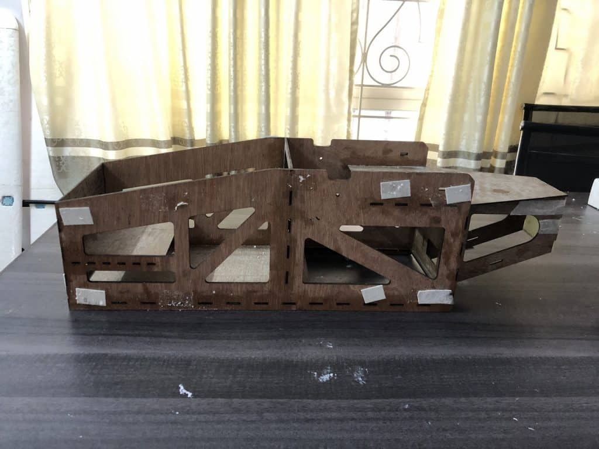
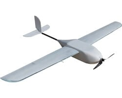
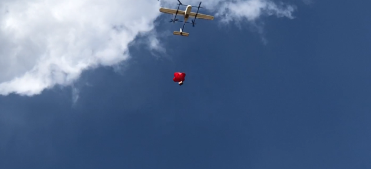

Designing a drone cannot be specific to the political boundary of Nepal for the principles of flight, evident by the availability of birds worldwide, are the same. However, the availability of materials, testing resources, and manufacturing tools can affect to a greater extent the final product you can develop. Nonetheless, it is possible to design and develop a drone using locally available products only. And, with some shops in Nepal selling advanced materials, and electronics and control equipment from overseas, you can make a fairly decent drone.
Read more
Blueprint for fixed-wing UAV design

The design of the fixed-wing drone is an iterative process where design estimates get better as the design progresses. The blueprint comprises the articles that describe the flow chart of the design process and links to the calculation sheet wherever necessary.

It is very cloudy outside. It may rain today or worse hailstone may fall from the sky. Rainwater is no longer neutral; pH as low as 3 is not uncommon. And some hailstones are so big that they can knock you to death. You like to stay at home but you cannot. Someone who could live would die because you stayed home. It’s for a far greater cause.
Read more